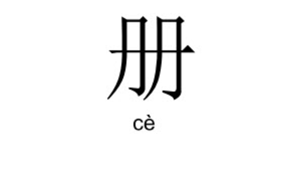

class: middle # The Book in China, Japan, Korea, and Vietnam <hr> Matthew J. Lavin Clinical Assistant Professor of English and Director of Digital Media Lab University of Pittsburgh January 2018 --- class: middle # Howsam on Chronology <hr> The most conventional and straightforward approach to the history of the book might be to start at the beginning, continue to present time, and then to stop--on either an upbeat or a downbeat depending on one's level of optimism about the future. ... Whether oriented to substrates, materials, or genres, these compelling and coherent (though oversimplified) chronologies highlight similarities as well as differences. But they are all Eurocentric. They do not allow for the history of the book in Asia, where pictographic writing systems have meant different developments in relation to printing and to genre. (Howsam 6-7) --- class: middle # China <hr> - ### Script is 4,000 years old - ### Earliest book form is called <em>jiance</em> or <em>jiandu</em> - ### Bamboo or wooden strips - ### Heavy and awkward when assembled as "a complete text" (99) - ### "Not conducive to wide circulation" (99) --- class: middle # China <hr> ### What does this look like to you?  --- class: middle # China <hr> - ### Tang Dynasty (618-907) - #### Sutra-folded binding aka accordion binding - #### Xylography - ### Song Dynasty (960-1279) - #### Woodblock printing - #### First woodblock edition of Confucian classics - #### Bi Sheng invents movable type - ### Yuan Dynasty (1271-1368) - #### Wrapped back binding - #### Evidence of print found in private collections --- class: middle # Xylography <hr> <iframe class="youtube" src="https://www.youtube.com/embed/JyOpCQIGFyg" frameborder="0" allowfullscreen></iframe> --- class: middle # China <hr> - ### Ming Dynasty (1368-1644) - #### Thread binding and leightweight fascicles - #### What is a fascicle? - ### Qing period (1644-1911): - #### Imperial projects on "a grand scale" (103) - #### Four libraries collection - #### Growth of publishing leads to new genres (107) --- class: middle # Why Didn't China's Publishing Industry Develop along the Lines that Europe's Did? <hr> --- class: middle # Japan <hr> - ### Got script from China in the 6th century CE - ### Typography in the 16th century - ### Commerical press in the 17th century - ### Fiction, authorship profession, increased literacy in the 19th century --- class: middle # Japan today <hr> - ### Globalization - ### Many translations of Western books - ### <em>Harry Potter</em> 2.3 million copies - ### Most Japanese writing doesn't find its way into English --- class: middle # Korea <hr> - ### Oldest known specimens of typography and print - ### Invasions from Japan made some materials scarce, which meant books were made from various materials - ### Western missionaries had a big influence - ### Basic Press Law (121) --- class: middle # Vietnam <hr> - ### Print culture, Confucianism, and Buddhism come from China - ### Nom: Chinese plus local characters to express Vietnamese - ### What is quoc ngu? - #### Created by Portguese missionaries - #### Modified by Alexandre du Rhodes - #### Made compulsory in 1910 by the French colonial government - #### Crucial to the rise of newspapers and the spread of Marxism